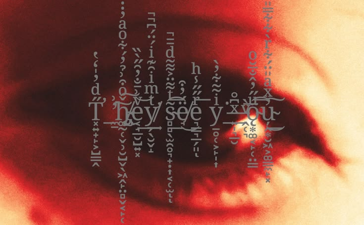

Gerald is the sort of person who can walk into a room and immediately decide he is the most interesting person in it. Usually he is already talking before anyone else gets the chance.
He is not nearly as stupid as he likes to look.

personality
Gerald is cocky, narcissistic, easily bored, and very fond of himself. He likes women, alcohol, nice things, attention, and being told that he's good at something, although he'd probably prefer to tell you himself. He can be charming when he wants something and unbearable when he doesn't.
He also likes pretending to be an idiot. It is useful. Gerald can act oblivious, laugh at the wrong thing, miss an obvious point, or carry on like he hasn't noticed anything at all. People tend to stop watching you properly when they think you're harmless. He has been doing this for years, and he is rather good at it.
He does not like people seeing him upset. Anger is easier. A joke is easier. Acting annoyed is easier. If something actually gets to him, he will usually find some way of making it look like it didn't.
He can be affectionate, too, although he has a funny way of showing it. He gets comfortable, gets annoying, starts teasing people, and then acts like he wasn't being nice at all. He cares more than he likes admitting.
worldview
Gerald has never had much patience for sitting around and waiting for life to hand him something. If he wants something, he goes after it. If he gets bored, he finds something else. If somebody gets in the way, that's their problem.
He doesn't spend much time worrying about whether something is right or wrong. He cares whether it works, whether it is worth his time, and whether he can get away with it. He likes having money because money lets him do what he wants. He likes being dangerous because being dangerous means people have to take him seriously.
Most of all, Gerald wants control over how other people see him. He wants to be the clever one, the impressive one, the one who has already figured everything out. Being laughed at is irritating. Being pitied is worse. Being genuinely understood is probably worst of all.
He can put on whatever version of himself is useful. Friendly Gerald. Stupid Gerald. Charming Gerald. Unbothered Gerald. He doesn't particularly care which one people believe.

backstory
Gerald grew up in the Millard family with his mother Aurore, his father Sylvester, and his younger brother Alan. They were a wealthy family and cared very much about how they looked to other people. Gerald was punished more often than Alan and was usually the one making things difficult, especially when he refused to listen. He was angry about a lot of it, but learned fairly early that showing it only made things worse. So he stopped showing it. He'd laugh, make some stupid comment, act like he didn't care, and let everyone think that was all there was to him.
He kept doing that when he got older. Gerald became an assassin, started drinking and smoking, chased women whenever he felt like it, and built himself into someone who was very easy to mistake for an arrogant idiot. He liked that. It meant people underestimated him. He could act careless, act oblivious, act like everything was a joke while keeping the things he actually thought to himself. Even his ego was useful to him. If he was always talking about how great he was, nobody had much reason to wonder what he was trying so hard not to show.
He still loved the attention. Gerald liked women, liked being wanted, liked being praised, and liked having people around him who thought he was impressive. He could be a complete narcissist about it. Michelle and Melonie became part of his life somewhere along the way, and somehow they stayed around despite everything else that came with him. He could be affectionate with them, disappear into his work, come back acting like nothing had happened, and carry on as usual. Gerald was very good at making things look normal.
Until he killed them.
He didn't stop pretending after that, either.
Gerald died at fifty-one.
I suppose I could explain why.
Hm…
Hhehe… yeah. It's fine. It's all fine.
Nothing to worry about anymore. No reason to keep thinking about it. It's over, isn't it?
...yes.
Heh. Hm… that's better. I can leave it there.

abilities
gerald's abilities →
appearance


voice

designation
killer.